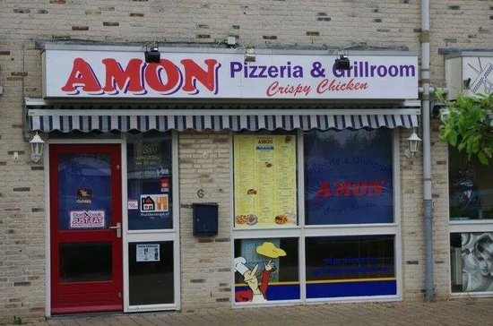
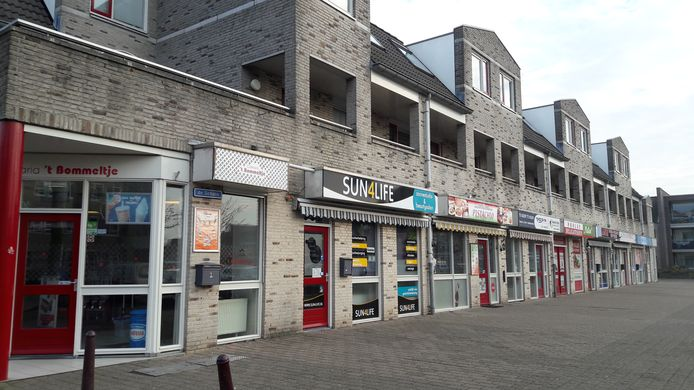

Amon is de beste Grillroom en pizzeria van Nederland. Ze hebben daar de beste broodjes Döner naar mijn mening. Ook volgens de heer D. van Wijhe een erg betrouwbare en Turkse pizza gespecialiseerde persoon is Amon de beste. De heer M. Groeneveld die gespecialiseerd is in kapsalons vindt ook dat Amon de beste verkoopt. De Cultuur en Sfeer wetenschapper L. Tukker zegt dat de sfeer in Amon ook een van de beste van Nederland is.
 2. Cappadocia 3. The Dönercompany 4. Dönerzaak de Vergt 5. Pistachio